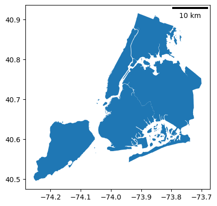
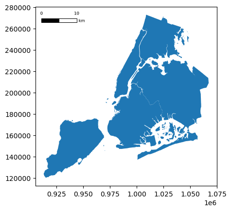

Note
Adding Scale Bars and North Arrows to a Matplotlib Plot#
Scale bars and north arrows are common elements added to maps to indicate the scale and orientation of the map, respectively.
Two packages exist for easily adding these elements to the default matplotlib plots generated by GeoPandas’ plot() function: matplotlib-scalebar and matplotlib-map-utils. The use of each is described below.
Using matplotlib-scalebar#
[1]:
from geodatasets import get_path
from matplotlib_scalebar.scalebar import ScaleBar
import geopandas as gpd
Creating a ScaleBar object#
The only required parameter for creating a ScaleBar object is dx. This is equal to a size of one pixel in real world. Value of this parameter depends on units of your CRS.
Projected coordinate system (meters)#
The easiest way to add a scale bar is using a projected coordinate system with meters as units. Just set dx = 1:
[2]:
nybb = gpd.read_file(get_path("nybb"))
nybb = nybb.to_crs(32619) # Convert the dataset to a coordinate
# system which uses meters
ax = nybb.plot()
ax.add_artist(ScaleBar(1))
[2]:
<matplotlib_scalebar.scalebar.ScaleBar at 0x771913d3a900>

Geographic coordinate system (degrees)#
dx should be equal to a distance in meters of two points with the same latitude (Y coordinate) which are one full degree of longitude (X) apart. You can calculate this distance by online calculator (e.g. the Great Circle calculator) or in geopandas.[3]:
from shapely.geometry.point import Point
points = gpd.GeoSeries(
[Point(-73.5, 40.5), Point(-74.5, 40.5)], crs=4326
) # Geographic WGS 84 - degrees
points = points.to_crs(32619) # Projected WGS 84 - meters
After the conversion, we can calculate the distance between the points. The result slightly differs from the Great Circle Calculator but the difference is insignificant (84,921 and 84,767 meters):
[4]:
distance_meters = points[0].distance(points[1])
Finally, we are able to use geographic coordinate system in our plot. We set value of dx parameter to a distance we just calculated:
[5]:
nybb = gpd.read_file(get_path("nybb"))
nybb = nybb.to_crs(4326) # Using geographic WGS 84
ax = nybb.plot()
ax.add_artist(ScaleBar(distance_meters))
[5]:
<matplotlib_scalebar.scalebar.ScaleBar at 0x771913d2afd0>
/home/docs/checkouts/readthedocs.org/user_builds/geopandas/conda/v1.1.3/lib/python3.13/site-packages/matplotlib_scalebar/scalebar.py:457: UserWarning: Drawing scalebar on axes with unequal aspect ratio; either call ax.set_aspect(1) or suppress the warning with rotation='horizontal-only'.
warnings.warn(

Using other units#
The default unit for dx is m (meter). You can change this unit by the units and dimension parameters. There is a list of some possible units for various values of dimension below:
dimension |
units |
|---|---|
si-length |
km, m, cm, um |
imperial-length |
in, ft, yd, mi |
si-length-reciprocal |
1/m, 1/cm |
angle |
deg |
In the following example, we will leave the dataset in its initial CRS which uses feet as units. The plot shows scale of 2 leagues (approximately 11 kilometers):
[6]:
nybb = gpd.read_file(get_path("nybb"))
ax = nybb.plot()
ax.add_artist(ScaleBar(1, dimension="imperial-length", units="ft"))
[6]:
<matplotlib_scalebar.scalebar.ScaleBar at 0x77190ef9c2d0>

Customization of the scale bar#
[7]:
nybb = gpd.read_file(get_path("nybb")).to_crs(32619)
ax = nybb.plot()
# Position and layout
scale1 = ScaleBar(
dx=1,
label="Scale 1",
location="upper left", # in relation to the whole plot
label_loc="left",
scale_loc="bottom", # in relation to the line
)
# Color
scale2 = ScaleBar(
dx=1,
label="Scale 2",
location="center",
color="#b32400",
box_color="yellow",
box_alpha=0.8, # Slightly transparent box
)
# Font and text formatting
scale3 = ScaleBar(
dx=1,
label="Scale 3",
font_properties={
"family": "serif",
"size": "large",
}, # For more information, see the cell below
scale_formatter=lambda value, unit: f"> {value} {unit} <",
)
ax.add_artist(scale1)
ax.add_artist(scale2)
ax.add_artist(scale3)
[7]:
<matplotlib_scalebar.scalebar.ScaleBar at 0x771906c6b750>

Using matplotlib-map-utils#
Using this package, north arrows and scale bars can be made with either functions or classes; for the purposes of this tutorial, only the functions will be used, though the classes work in much the same way. Tutorials for customizing each object are available within the docs directory of the repository.
[8]:
from geodatasets import get_path
from matplotlib_map_utils.core.north_arrow import NorthArrow, north_arrow
from matplotlib_map_utils.core.scale_bar import ScaleBar, scale_bar
import geopandas as gpd
Set-Up#
[9]:
nybb = gpd.read_file(get_path("nybb"))
# By default, the data is projected in feet
nybb.crs
[9]:
<Projected CRS: EPSG:2263>
Name: NAD83 / New York Long Island (ftUS)
Axis Info [cartesian]:
- X[east]: Easting (US survey foot)
- Y[north]: Northing (US survey foot)
Area of Use:
- name: United States (USA) - New York - counties of Bronx; Kings; Nassau; New York; Queens; Richmond; Suffolk.
- bounds: (-74.26, 40.47, -71.8, 41.3)
Coordinate Operation:
- name: SPCS83 New York Long Island zone (US survey foot)
- method: Lambert Conic Conformal (2SP)
Datum: North American Datum 1983
- Ellipsoid: GRS 1980
- Prime Meridian: Greenwich
If you are working with a common plot size, both NorthArrow and ScaleBar have a function called set_size() that bulk-updates a variety of settings so that the relevant object looks “better” at that size.
GeoPandas’ plot() function will create figures of 6.4"x4.8" with the data used in this tutorial, which corresponds to a size of small.
[10]:
NorthArrow.set_size("small")
ScaleBar.set_size("small")
North Arrows#
The north_arrow() function takes in the following arguments:
ax: the axis on which to plot the north arrowlocation: a string indicating the location of the north arrow on the plot (seelocunder matplotlib.pyplot.legend e.g., “upper left”, “lower right”, etc.)scale: the desired height of the north arrow, in inchesrotation: a dictionary containing either a value fordegrees(if rotation will be set manually), or arguments forcrs,reference, andcoords(if rotation will be calculated based on the provided CRS)
[11]:
# Making a basic arrow using the minimum amount of arguments
ax = nybb.plot()
north_arrow(
ax, location="upper left", rotation={"crs": nybb.crs, "reference": "center"}
)

Optional additional arguments can be passed to base, fancy, shadow, label, pack, and aob to change the styling of the arrow; see the documentation under docs/howto_north_arrow.ipynb in the GitHub repository for details.
[12]:
# Making a more customized arrow
ax = nybb.plot()
north_arrow(
ax,
location="upper left",
scale=0.4,
rotation={"crs": nybb.crs, "reference": "center"},
base={"edgecolor": "blue", "linewidth": 2},
fancy=False,
shadow=False, # this turns off the component
label={"position": "top", "text": "North", "fontsize": 8},
)

Scale Bars#
The scale_bar() function takes in the following arguments:
ax: the axis on which to plot the scale barlocation: a string indicating the location of the scale bar on the plot (seelocunder matplotlib.pyplot.legend e.g., “upper left”, “lower right”, etc.)style: the appearance of the arrow: can be eitherticksorboxes(default)
[13]:
# Making a basic scale bar using the minimum amount of arguments
# Note that the data is auto-converted to miles
ax = nybb.plot()
scale_bar(ax, location="upper left", style="boxes", bar={"projection": nybb.crs})
[14]:
# Making the same scale bar but in the other style (ticks)
ax = nybb.plot()
scale_bar(ax, location="upper left", style="ticks", bar={"projection": nybb.crs})

The scale bar can handle converting between common unit types, as shown in the table below.
Unit Type |
Conversion Factor |
Accepted Inputs |
|---|---|---|
Meters |
1 |
|
Kilometers |
1000 |
|
Feet |
0.3048 |
|
Yards |
0.9144 |
|
Miles |
1609.34 |
|
Nautical Miles |
1852 |
|
The scale bar can also handle unprojected data (degrees) - it will convert it to metres using great circle distance, and then convert it into the units selected by the user. This will happen automatically when projection is set to a CRS of 4326 or similar.
[15]:
# Making a scale bar in kilometers instead, by changing bar["units"]
# Note that the data did not have to be reprojected to do this
ax = nybb.plot()
scale_bar(
ax, location="upper left", style="boxes", bar={"projection": nybb.crs, "unit": "km"}
)

Optional additional arguments can be passed to bar, labels, units, text, and aob to change the styling of the bar; see the documentation under docs/howto_scale_bar.ipynb in the GitHub repository for details.
Note that control of the length of the bar, as well as the number of major and minor divisions, is handled within the ``bar`` style dictionary.
[16]:
# Making a more formatted scale bar (ticks)
ax = nybb.plot()
scale_bar(
ax,
location="upper left",
style="ticks",
bar={
"projection": nybb.crs,
"max": 12,
"major_div": 2,
"minor_div": 3,
"minor_type": "first",
"tick_loc": "middle",
"tickcolors": "blue",
"basecolors": "blue",
"tickwidth": 1.5,
},
labels={"loc": "above", "style": "major"},
units={"loc": "bar", "fontsize": 8},
text={"fontfamily": "monospace"},
)